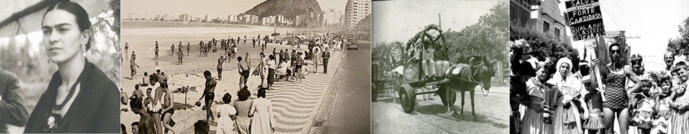
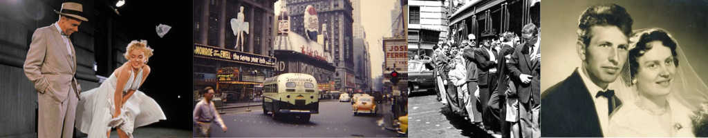
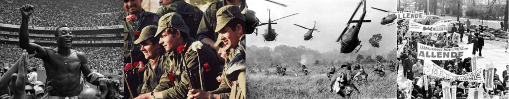
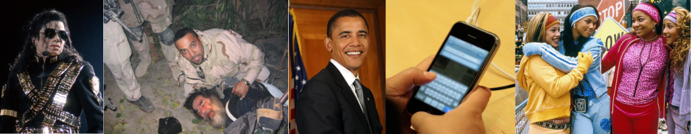

Timeline History
Eventos da Década de 1920:
- Proibição nos EUA (1920-1933): A Lei Seca nos Estados Unidos proibiu a produção e venda de álcool, levando ao surgimento de bares clandestinos e ao aumento do crime organizado.
- Nascimento da Cultura do Jazz: A Era do Jazz, com músicos como Louis Armstrong e Duke Ellington contribuindo para o crescimento desse gênero musical.
- Revolução Cultural na China (1927-1949): A China viu o início da Revolução Comunista liderada por Mao Zedong, que culminou na fundação da República Popular da China em 1949.

Eventos da Década de 1930:
- Grande Depressão (1929-1939): A década de 1930 foi marcada pela Grande Depressão, uma crise econômica global que resultou em altas taxas de desemprego e dificuldades financeiras.
- Primeira Transmissão de Televisão (1936): A primeira transmissão de televisão de alta definição foi feita por RCA nos Estados Unidos.
- Primeira Exibição do Filme "O Mágico de Oz" (1939): O icônico filme "O Mágico de Oz" foi lançado em 1939, tornando-se um clássico do cinema.

Eventos da Década de 1940:
- Segunda Guerra Mundial (1939-1945): A Segunda Guerra Mundial foi o conflito mais devastador da história, envolvendo nações de todo o mundo e resultando em milhões de mortes.
- Holocausto (1941-1945): Durante a Segunda Guerra Mundial, ocorreu o Holocausto, um genocídio que levou à morte de cerca de seis milhões de judeus pelos nazistas.
- Bomba Atômica em Hiroshima e Nagasaki (1945):Os Estados Unidos lançaram bombas atômicas nas cidades japonesas de Hiroshima e Nagasaki, marcando o fim da Segunda Guerra Mundial.

Eventos da Década de 1950:
- Guerra da Coreia (1950-1953): A Guerra da Coreia foi travada entre a Coreia do Norte e a Coreia do Sul, com apoio de superpotências como os Estados Unidos e a União Soviética. Terminou com um armistício em 1953, dividindo a península em dois países.
- Início da Guerra Fria (década de 1950 em diante): A rivalidade ideológica entre os Estados Unidos e a União Soviética se intensificou na década de 1950, marcando o início da Guerra Fria, um período de tensão política e militar global.
- Lançamento do Sputnik (1957): A União Soviética lançou o Sputnik, o primeiro satélite artificial, em 1957, desencadeando a Corrida Espacial com os Estados Unidos.

Eventos da Década de 1960:
- Movimento dos Direitos Civis nos EUA (década de 1950 e 1960): O movimento dos direitos civis lutou pela igualdade de direitos para os afro-americanos nos Estados Unidos e culminou na Lei dos Direitos Civis de 1964 e na Lei de Direitos de Voto de 1965.
- Assassinatos de Martin Luther King Jr. e John F. Kennedy (1960s): Martin Luther King Jr., líder do movimento dos direitos civis, foi assassinado em 1968. O presidente dos EUA, John F. Kennedy, foi assassinado em 1963.
- Chegada do Homem na Lua (1969): A missão Apollo 11 levou o astronauta Neil Armstrong a se tornar o primeiro ser humano a pisar na Lua em 1969, com a famosa frase: "Isso é um pequeno passo para o homem, um salto gigantesco para a humanidade."
Eventos da Década de 1970:
- Crise do Petróleo (década de 1970): A década de 1970 testemunhou duas crises do petróleo (em 1973 e 1979) que levaram a aumentos significativos nos preços dos combustíveis e tiveram um impacto profundo na economia global.
- Fundação da Microsoft (1975): Bill Gates e Paul Allen fundaram a Microsoft em 1975, lançando uma das empresas de tecnologia mais influentes do mundo.
- Acordo de Camp David (1978): O presidente dos EUA, Jimmy Carter, intermediou o Acordo de Camp David entre Israel e Egito em 1978, estabelecendo uma paz duradoura entre os dois países.

Eventos da Década de 1980:
- Queda do Muro de Berlim (1989):
- Desastre Nuclear de Chernobyl (1986):
- Nelson Mandela Libertado (1990): O líder anti-apartheid Nelson Mandela foi libertado da prisão em 1990, após passar 27 anos detido. Isso marcou o início do processo de transformação da África do Sul em uma democracia multirracial.
Eventos da Década de 1990:
- World Wide Web (1991): O físico britânico Tim Berners-Lee inventou a World Wide Web em 1991, permitindo o acesso à internet por meio de um navegador web e revolucionando a forma como as informações são compartilhadas e acessadas.
- Acordos de Oslo (1993): Os Acordos de Oslo foram assinados entre Israel e a Organização para a Libertação da Palestina (OLP) em 1993, marcando um passo importante em direção à paz no Oriente Médio.
- Genoma Humano Sequenciado (2003): O Projeto Genoma Humano foi concluído em 2003, resultando na sequência completa do DNA humano, o que teve implicações significativas na medicina e na pesquisa biomédica.
Eventos da Década de 2000:
- taques de 11 de setembro (2001): Em 11 de setembro de 2001, os Estados Unidos foram alvo de ataques terroristas coordenados pela Al-Qaeda, resultando na destruição do World Trade Center em Nova York e na morte de milhares de pessoas.
- Crise Financeira Global (2008): A crise financeira global de 2008 teve um impacto profundo nos mercados financeiros e na economia global, levando a uma recessão econômica significativa.
- Eleição de Barack Obama (2008): Barack Obama foi eleito o 44º presidente dos Estados Unidos em 2008, tornando-se o primeiro presidente afro-americano da nação.
